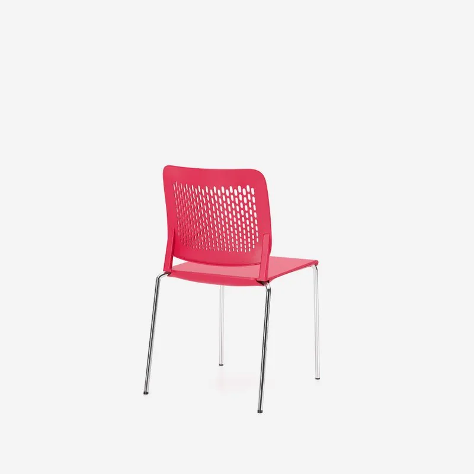
1 / 10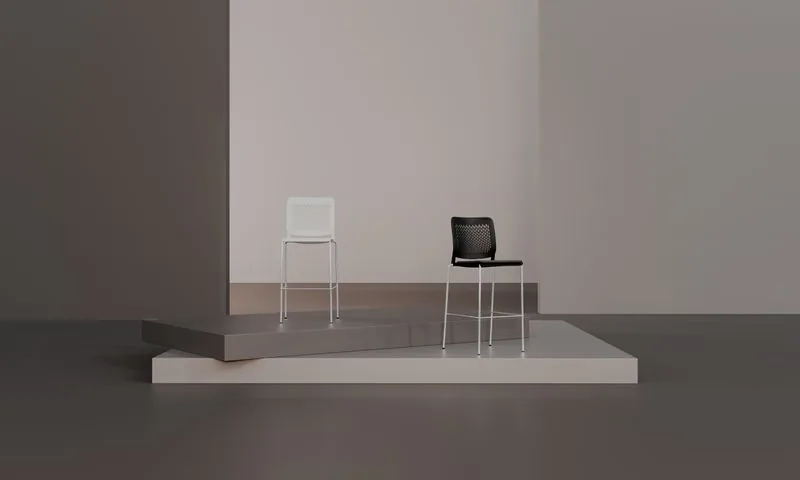
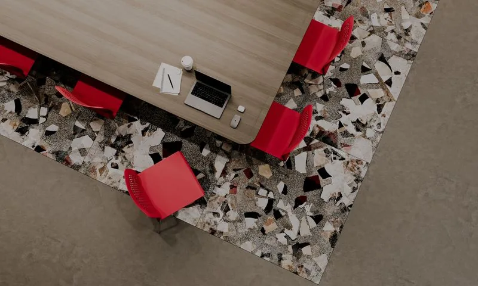
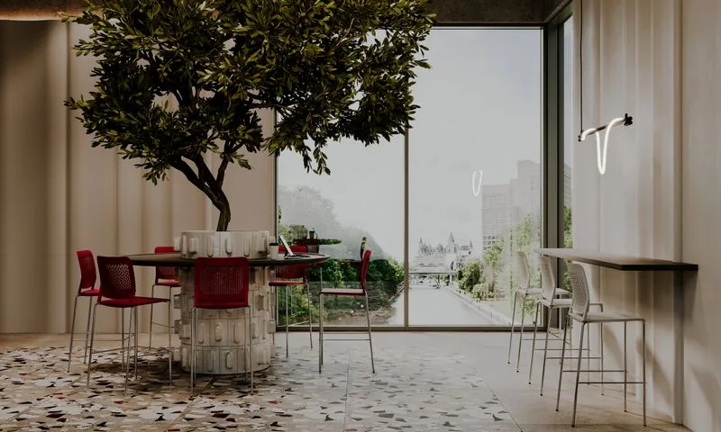
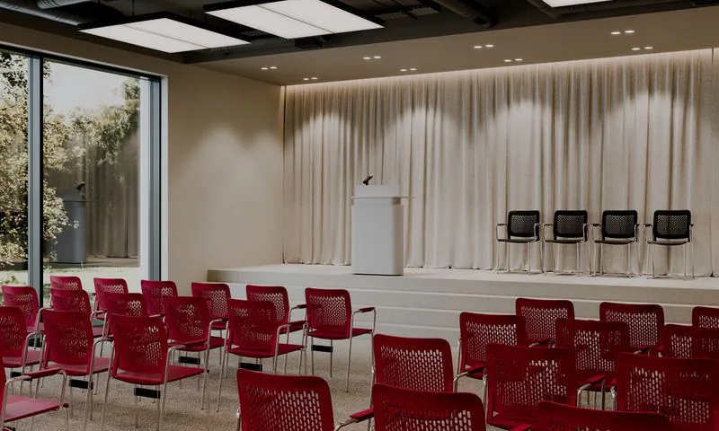
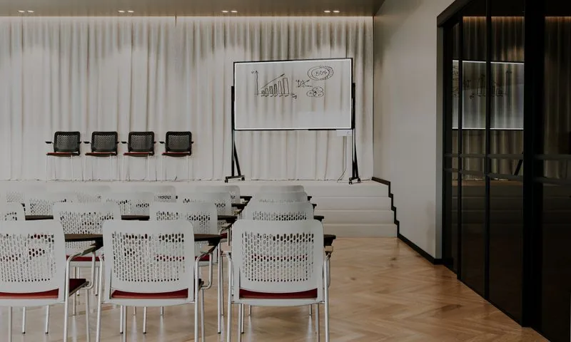
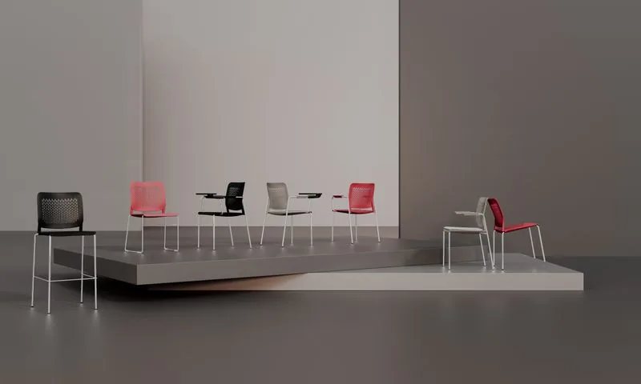
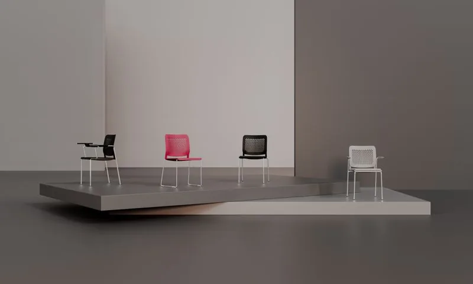
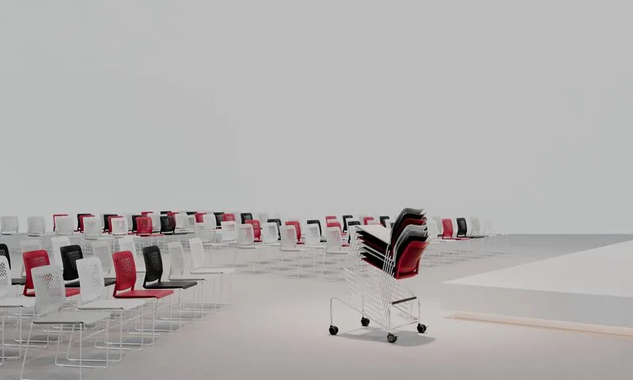
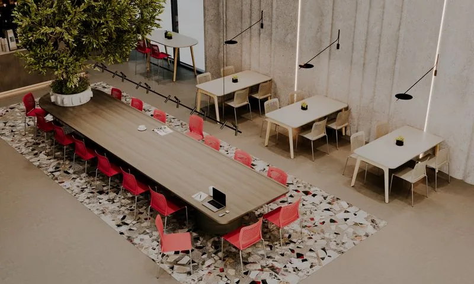
Kolekcja CALADO 
CALADO
Krzesło konferencyjne z ażurowym oparciem z tworzywa, na chromowanej ramie czteronożnej — sztaplowane i łączone w rzędy.
Krzesło konferencyjne z ażurowym oparciem z tworzywa na chromowanej ramie — pięć wersji (czteronożna, z podłokietnikami, z pulpitem, płozowa, hoker).
Potrzebna wycena?
Wycena zależy od tkaniny i konfiguracji — przygotujemy ofertę indywidualną.
506 147 435Krzesło konferencyjne Calado 4L na chromowanej stalowej ramie czteronożnej. Siedzisko i ażurowe oparcie z polipropylenu (oparcie wzmocnione włóknem szklanym). Sztaplowanie do 8 sztuk (12 na wózku), łączenie w rzędy łącznikiem LINK-PLASTIC. Opcjonalnie tapicerowana nakładka na siedzisko (SEAT PLUS).
Ażurowe oparcie z tworzywa
Charakterystyczne, ażurowe oparcie z polipropylenu wzmocnionego włóknem szklanym — lekkie wizualnie, wytrzymałe i łatwe w utrzymaniu czystości.
Pięć wersji jednej rodziny
Calado 4L (czteronożne), 4L-ARM (z podłokietnikami), 4L-ARM/FRONT (ze składanym pulpitem), CFS (na płozach) oraz hoker barowy — jeden język wzorniczy dla różnych zastosowań.
Sztaplowanie i łączenie w rzędy
Krzesła czteronożne sztaplują się do 8 sztuk, płozowe do 10; łączenie w rzędy łącznikami i uniwersalnym łącznikiem z regulacją rozstawu. Dostępny wózek transportowy.
Skorupa z tworzywa w czterech kolorach
Siedzisko i oparcie z polipropylenu w kolorach białym, czarnym, czerwonym i jasnoszarym — trwałe i łatwe w czyszczeniu.
Chromowana rama i opcjonalna tapicerka
Stalowa rama wyłącznie w wykończeniu chromowanym; opcjonalnie tapicerowana nakładka na siedzisko (SEAT PLUS) w szerokiej palecie tkanin.
Materiał skorupy (tworzywo PP)
Wykończenie ramy
Tkaniny / tapicerka
Pogrupowane wg grup tkanin. Wybierz grupę → tkaninę → próbkę koloru. Najedź na duży podgląd, by powiększyć.
Lars
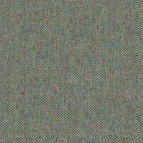
Lars · LAR35🔍 powiększEra
 Era · CSE42🔍 powiększ
Era · CSE42🔍 powiększBondai
 Bondai · BN6003🔍 powiększ
Bondai · BN6003🔍 powiększLucia T2T
 Lucia T2T · YB097🔍 powiększ
Lucia T2T · YB097🔍 powiększOflum
 Oflum · OL06🔍 powiększ
Oflum · OL06🔍 powiększSempre / Sempre Melange
 Sempre / Sempre Melange · SM07🔍 powiększ
Sempre / Sempre Melange · SM07🔍 powiększCura
 Cura · CUR66167🔍 powiększ
Cura · CUR66167🔍 powiększRivet
 Rivet · EGL24🔍 powiększ
Rivet · EGL24🔍 powiększXtreme
 Xtreme · XR160🔍 powiększ
Xtreme · XR160🔍 powiększValencia
Silvertex
Step / Step Melange
 Step / Step Melange · STG67004🔍 powiększ
Step / Step Melange · STG67004🔍 powiększMain Line Flax
 Main Line Flax · MLF22🔍 powiększ
Main Line Flax · MLF22🔍 powiększBlazer
 Blazer · CUZ1R🔍 powiększ
Blazer · CUZ1R🔍 powiększSynergy
 Synergy · LDS56🔍 powiększ
Synergy · LDS56🔍 powiększ

Czym różnią się wersje Calado (4L, 4L-ARM, 4L-ARM/FRONT, CFS, hoker)?
Czy krzesła Calado można sztaplować i łączyć w rzędy?
Z czego wykonane jest siedzisko i oparcie Calado?
Jakie kolory skorupy i wykończenie ramy są dostępne?
Czy Calado ma wersję tapicerowaną?